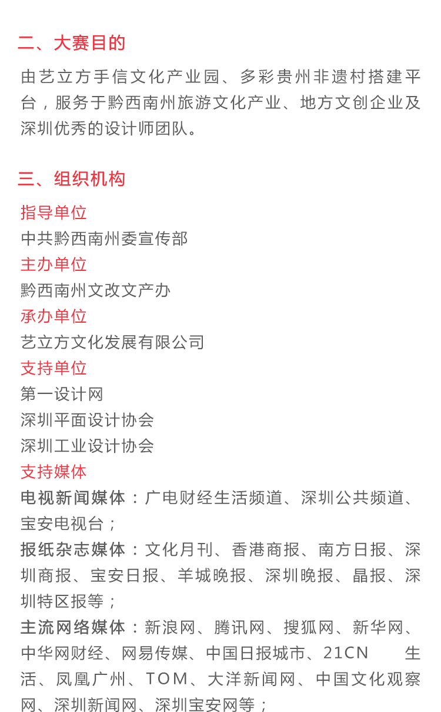

<header class="ma-header">
    <a class="fa fa-angle-left" ui-sref="index"></a>
    <p class="matchdetail">大赛详情</p>
</header>
<main class="ma-main">
    <div class="header-pic"></div>
    <div class="art">
        <h2 class="art-title">2016 “多彩贵州·寻美黔西南” 旅游文...</h2>
        <span class="data">征稿时间：2016.07.30-2016.08.16</span>&nbsp;&nbsp;&nbsp;&nbsp;<span class="fa fa-eye">21.3万</span>
        <br/>
        <br/>
        
        
        
        
        
        
        
        
        
        

    </div>
</main>
<footer  id="top">
    <a href=""></a>
</footer>

<script>
    $(function(){
        //置顶按钮显示/隐藏实现
        $(window).scroll(function(){
            var w_height = $(window).height();//浏览器高度
            console.log(w_height);
            var scroll_top =$(document).scrollTop();//滚动条到顶部的垂直高度
            console.log(scroll_top);
            if(scroll_top > w_height){
                $("#top").show();
            }else{
                $("#top").hide();
            }
        });
        //置顶
        $("#top").click(function(e){
            e.preventDefault();
            $(document.documentElement).animate({
                scrollTop: 0
            },200);
            //支持chrome
            $(document.body).animate({
                scrollTop: 0
            },200);
        });
    })

</script>